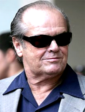
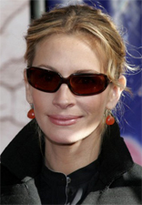
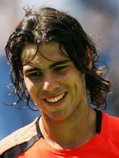

← Bài trước: Love the Battle: Pathways to Performing | 🏠 Mental Game Trang chủ | Bài tiếp: → Mastering Your Choking Response
Love the battle rafael nadal
Thư viện kiến thức quần vợt thống nhất — Cơ bản, Phân tích kỹ thuật, Thư viện tham khảo và nhiều hơn nữa
Love the Battle: Rafael Nadal
Jim Loehr
Sự cầu kỳ không phải là điều quan trọng nhất phân biệt Rafael Nadal với các đối thủ khác.
Khi bạn xem trận chung kết Wimbledon năm 2008, bạn có cảm nhận như nhiều người quan sát khác, rằng người chiến thắng cuối cùng sẽ là ai chỉ bằng cách quan sát cách Rafael thể hiện bản thân và sự tự tin tuyệt vời mà anh ấy thể hiện không?
Có thể chỉ có một Rafael Nadal, nhưng các tay vợt ở mọi cấp độ đều có thể học được bài học sâu sắc từ những gì Nadal thể hiện trên sân. Bài học đó là cách suy nghĩ và hành động kiên cường có thể chuyển hóa thành kết quả thi đấu xuất sắc.
Hành động chuyên nghiệp
Điều này hoạt động như thế nào? Tôi tin rằng các tay vợt chuyên nghiệp thực sự là những diễn viên và diễn viên xuất sắc nhất. Không có sự khác biệt giữa những gì Julia Roberts hoặc Jack Nicholson hoặc bất kỳ diễn viên Hollywood nào thực sự xuất sắc có thể làm và những gì các tay vợt chuyên nghiệp xuất sắc làm. Điều đó là triệu hồi cảm xúc họ cần để biểu diễn sâu sắc từ bên trong chính mình. Và Rafael Nadal chính là ví dụ tuyệt vời nhất.
Bạn có thể nói được điểm nào Nadal thắng và điểm nào anh thua không?
Không chỉ là những điều cầu kỳ mà Nadal làm: nhảy lên xuống trong khi tung đồng xu, chạy zigzag đến baseline để ấm dậy, đấm tay sau những cú đánh quan trọng.
Cũng là cách anh ấy thể hiện bản thân suốt trận đấu trong mọi chi tiết. Những nghi thức cực kỳ chính xác của anh ấy. Cách anh ấy kiểm soát tốc độ trận đấu. Cách anh ấy duy trì cùng một thái độ và ngôn ngữ cơ thể dù đã thắng hay thua điểm cuối cùng. Ngay cả cách anh ấy sắp xếp chai nước trên sân thay người. Trong mọi mặt, Nadal thể hiện sự kiểm soát cảm xúc tuyệt vời. Anh ấy thực sự là tay vợt số một thế giới.
Nếu bạn xem nhiều tay vợt hàng đầu khác, ngay cả trong top 10 thế giới, hành vi của họ trên sân có thể rất không ổn định về mặt cảm xúc. Thường thì họ lên xuống từ điểm này sang điểm khác. Họ có thể thể hiện ngôn ngữ cơ thể tiêu cực. Họ có thể nổi giận và ném vợt.
Bạn rất hiếm khi thấy điều này từ Rafael Nadal. Anh ấy thể hiện hình ảnh một chiến binh yên lặng và bất khả chiến bại và hầu như không bao giờ lệch khỏi kịch bản. Hãy xem cách anh ấy phản ứng từ điểm này sang điểm khác trong hoạt hình - thường rất khó để xác định kết quả chỉ bằng cách quan sát ngôn ngữ cơ thể của anh ấy.
Ngay cả các tay vợt hàng đầu cũng có thể dễ bị ảnh hưởng bởi những biểu hiện tiêu cực.
Kịch bản
Câu hỏi của tôi dành cho bạn là: bạn thường xuyên theo dõi cùng một kịch bản không? Nếu tôi xem bạn chơi, tôi có thấy bạn thể hiện kịch bản đó bất kể bạn cảm thấy thế nào? Bất kể vị trí của bạn trong trận đấu? Bạn có thực sự có một kịch bản để theo dõi không?
Chúng tôi gọi phần này của hành vi của bạn là "bản thân diễn viên". Những kỹ năng diễn viên nào bạn có? Vì những kỹ năng diễn viên đó chính là những gì cần thiết để khóa vào trạng thái biểu diễn lý tưởng của bạn, trạng thái hòa hợp về tinh thần, thể chất và cảm xúc nơi những biểu diễn tốt nhất của bạn tự nhiên chảy ra. (Nhấn vào đây.)
Những kỹ năng diễn viên thường yêu cầu bạn phải rời khỏi cách bạn thực sự cảm thấy. Có lẽ bạn không có tự tin. Bạn thực sự cảm thấy mệt mỏi. Bạn vừa chơi một trận đấu và bây giờ phải chơi trận đấu khác. Bạn vừa đi qua bao múi giờ? Bạn không ngủ tốt đêm qua. Bạn vừa có trận cãi vã với vợ chồng. Bạn không muốn thi đấu.
Điều gì là sự kiên cường?
Tôi sẽ nói với bạn điều gì là sự kiên cường. Sự kiên cường là khả năng kéo bản thân từ nơi bạn thực sự đang ở đến nơi bạn cần đến, nơi chúng tôi gọi là "bản thân diễn viên". Để kéo bản thân thông qua suy nghĩ kiên cường và hành động kiên cường vào một cách cảm thấy rất đặc biệt, rất độc đáo, nơi chúng tôi gọi là IPS.
Đôi khi nó có thể bắt đầu như một cảm xúc nhân tạo, nhưng những diễn viên xuất sắc mang nó lên bề mặt và làm cho nó trở nên thực sự. Và trong quá trình đó, họ mang kịch bản đến đời, bất kể kịch bản đó có gì. Kịch bản có thể gọi đến những cảm xúc cách một triệu dặm từ nơi họ thực sự đang ở. Họ có thể không cảm thấy hứng thú hoặc niềm vui hoặc hạnh phúc, nhưng họ là những người chuyên nghiệp. Họ đã học được cách thu hút trong chính bản thân mình những tài nguyên cần thiết để làm cho những cảm xúc đó trở nên thực sự.
Nadal có sự kiểm soát tuyệt vời đối với những nghi thức và sự hiện diện vật lý của mình.
Khi nói đến Nadal, việc luyện tập của anh ấy là hoàn hảo. Nếu bạn chủ động luyện tập nó, bạn có thể truy cập vào cùng hóa học đó khi bạn cảm thấy nó ít nhất, nhưng khi bạn có thể cần nó nhiều nhất. Nhưng nếu bạn không luyện tập nó, bạn sẽ không bao giờ có thể nhấn nút khi cần thiết.
Nhưng việc phát triển điều này mất thời gian. Bạn không thể học được nó trong một đêm. Nó giống như cú đánh của bạn. Nếu bạn cho phép bản thân luyện tập cơ học theo những cách lỏng lẻo, cuối cùng cơ học sẽ biến mất khỏi bạn.
Cùng một điều xảy ra về mặt cảm xúc. Ngay khi bạn trở nên lỏng lẻo về mặt cảm xúc - suy nghĩ lỏng lẻo, hình ảnh lỏng lẻo, hành động lỏng lẻo với cơ thể vật lý của mình, bạn sẽ trở nên mềm mại. Bạn sẽ không truy cập vào tài năng và kỹ năng của mình trong bối cảnh chiến đấu, trong bối cảnh cạnh tranh.
Vì vậy, rất quan trọng là bạn nhận ra rằng chính bạn là một diễn viên. Đó chính là điều mà một người biểu diễn thể thao xuất sắc. Đó là lý do tại sao mỗi lần bạn bước lên sân quần vợt, bạn nên cố gắng kích thích những cảm xúc đó giúp bạn mạnh mẽ. Càng luyện tập nó, bạn càng tốt hơn.
Sẵn sàng khóc?



Jack, Julia và Rafa - ba diễn viên hàng đầu trong nghề.
Chúng tôi biết kịch bản trong thể thao là gì. Đó là sự tự tin. Đó là sự chiến đấu tích cực. Đó là sự thư giãn. Đó là niềm vui. Chúng tôi biết rằng trạng thái biểu diễn lý tưởng đó là nơi chúng tôi sẽ đạt được nhiều nhất từ trò chơi, nơi tài năng và kỹ năng của chúng tôi sẽ được sinh ra và được phóng lên quỹ đạo cao nhất, và đây cũng là nơi chúng tôi sẽ có được nhiều sự hài lòng và niềm vui và niềm vui từ môn thể thao.
Nhưng tất cả những điều đó đều yêu cầu những kỹ năng diễn xuất tuyệt vời. Có một số nghiên cứu thú vị cho thấy hóa học của cảm xúc giả và cảm xúc thực trong những diễn viên chuyên nghiệp là không phân biệt được.
Nó cho thấy rằng khi Julia Roberts khóc trên màn ảnh và chúng ta so sánh với sự buồn bã thực sự, sự khóc thực sự sinh ra từ một phản ứng rất tự nhiên, tự phát đối với một sự kiện bi thảm, thì hai điều đó là không phân biệt được ở mức độ sinh lý. Đây chính là lý do tại sao những diễn viên xuất sắc như vậy trên màn ảnh, vì họ thực sự tham gia vào việc triệu hồi hóa học liên quan đến những cảm xúc đó.
Hành động kiên cường có thể triệu hồi hiệu suất bạn muốn.
Bạn có thể không bắt đầu tự tin. Bạn có thể không cảm thấy năng lượng nào. Bạn có thể cảm thấy như thể không có mặt. Bạn có thể không thích chơi một người nào đó trước một khán giả nào đó, hoặc bất cứ điều gì. Nhưng nếu bạn lấy những thủ tục, kỹ năng và hướng dẫn giống như những diễn viên hoặc diễn viên xuất sắc, bạn chấp nhận trách nhiệm của mình như một đối thủ, và bạn tạo ra một khí hậu đặc biệt bên trong mình.
Bây giờ, Julia Roberts và Jack Nicholson làm thế nào? Làm thế nào họ triệu hồi những cảm xúc đó? Chúng tôi làm chính xác những gì Rafael Nadal làm trong bối cảnh những trận chiến cạnh tranh của mình. Rafael Nadal đã học cách suy nghĩ rất cẩn thận - anh ấy suy nghĩ kiên cường. Anh ấy đã học cách hành động rất cẩn thận - anh ấy hành động kiên cường. Và điều đó có nghĩa là gì? Anh ấy thể hiện năng lượng, tích cực, niềm vui, cường độ, tự tin. Anh ấy làm điều này liên tục.
Nadal hiếm khi lệch khỏi kịch bản. Anh ấy thậm chí còn cười vào chính mình khi anh ấy mắc lỗi quan trọng. Nadal thực sự cười khi anh ấy đánh lỗi đôi trong khi phục vụ hai điểm từ trận đấu trong trận chung kết Wimbledon năm nay. Có bao nhiêu tay vợt có thể nói rằng họ có đủ tự tin và niềm tin nội tâm để làm điều đó?
Nhiều tay vợt liên tục lệch khỏi kịch bản.
Hành động kém
Có rất nhiều diễn viên kém trong thể thao luôn lệch khỏi kịch bản. Họ tự trách mình. Họ than vãn, kêu rên, than phiền. Không có chỗ nào trong kịch bản dành cho loại phản ứng cảm xúc đó.
Khi chúng tôi là tay vợt, chúng tôi phải luyện tập những kỹ năng mà một diễn viên hoặc diễn viên phải luyện tập. Chúng tôi phải học cách mang đến sự tự tin với biểu cảm trên mặt, bằng cách di chuyển các cơ bắp của mặt. Khi chúng tôi truyền đạt một nụ cười, chúng tôi thực sự đang truyền đạt cho cơ thể rằng mọi thứ đều ổn, mọi thứ đều tốt.
Thực tế, chúng tôi đang di chuyển cơ thể ở mức phân tử. Chúng tôi biết rằng các phản ứng của hệ thần kinh tự chủ phản ánh sự di chuyển của các cơ bắp theo những cách cụ thể về cảm xúc, khi chúng tôi mang biểu cảm một nụ cười hoặc một biểu cảm buồn hoặc một biểu cảm hạnh phúc.
Thực tế, chỉ cần di chuyển các cơ bắp mặt để phù hợp với những cảm xúc chúng tôi muốn trải nghiệm sẽ giúp rất nhiều. Nếu tôi nói với Julia Roberts, tôi muốn mang một nụ cười trên mặt, nhưng tôi muốn bạn khóc nước mắt buồn, cô ấy tuyệt đối không thể làm được vì cơ thể đang truyền đạt những thông điệp khác nhau.
Cơ thể là một khối thống nhất và cách bạn hành động trên sân quần vợt ảnh hưởng trực tiếp đến cách bạn cảm thấy.
Trận đấu quần vợt không phải là nơi để sợ hãi, buồn bã hoặc tức giận. Nếu bạn muốn truyền đạt sự tự tin và niềm tin và tích cực và bạn đang mang đầu và vai của mình xuống, cách đi của bạn chậm chạp và lười biếng và không có tinh thần, bạn không thể triệu hồi những cảm xúc bạn cần để mạnh mẽ, những cảm xúc để động viên tất cả những tài nguyên mà bạn có thể có bên trong.
Cơ thể là một khối thống nhất. Các cơ bắp của mặt, các cơ bắp của vai được kết nối với những gì bạn đang suy nghĩ. Và tất cả những điều đó được kết nối với những hình ảnh bạn mang trong đầu. Và tất cả những điều đó được kết nối với sinh lý học và cảm xúc mà bạn đang mang theo mọi lúc. Tâm trí là cơ thể, cơ thể là tâm trí, và mọi thứ bạn làm ảnh hưởng đến mọi thứ khác. Tất cả các tế bào đang kết nối và giao tiếp trong một mạng lưới tương tác tuyệt vời và rực rỡ, tuyệt vời.
Cũng rất quan trọng là hiểu rằng cảm xúc hoạt động rất giống như cơ bắp. Ví dụ, nếu bạn kích thích một cơ bắp cụ thể, bạn liên tục làm việc một cơ bắp cụ thể, khi bạn muốn triệu hồi cơ bắp đó trong quá trình hoạt động đó, nó sẽ dễ dàng có sẵn cho bạn. Cùng một điều cũng đúng với cảm xúc.
Khả năng biểu diễn của bạn được kết nối với những hình ảnh bạn mang trong đầu.
Bài kiểm tra $10,000
Nếu tôi nói rằng tôi sẽ cho bạn $10,000 nếu bạn có thể khóc cho tôi trong ba phút? Nếu bạn rất hiếm khi khóc, cơ hội bạn có thể triệu hồi cảm xúc đó lên bề mặt là gần như không thể. Những người có thể khóc khá dễ dàng và đã làm việc trên các đường dẫn kết nối với phản ứng cụ thể đó sẽ có khả năng cao hơn để khóc và nhận được $10,000.
Những gì bạn cần phải làm để có được $10,000? Điều đầu tiên là đảm bảo rằng suy nghĩ của bạn nhất quán với cảm xúc mà bạn đang cố gắng đạt được. Bạn có thể nghĩ về điều buồn nhất bạn từng nghĩ trong đời - điều bi thảm nhất từng xảy ra hoặc có thể xảy ra với bạn. Và suy nghĩ về điều đó, tập trung vào điều đó, sẽ bắt đầu thay đổi hóa học của bạn.
Chúng tôi cũng biết rằng nếu bạn hình dung cảm xúc, nó sẽ trở nên mạnh mẽ hơn. Có vẻ như não bộ không thể phân biệt được những gì được tưởng tượng sống động với những gì thực sự xảy ra. Hóa học trở nên thực như thể những gì bạn tưởng tượng đã xảy ra ngay tại đây và bây giờ.
Tại sao bạn cảm thấy như thể bạn thực sự đang ở trong Jurassic Park?
Đó chính là điều xảy ra với bạn khi bạn đi vào rạp và ngồi xem một bộ phim như "Jurassic Park". Bạn biết bạn đang ngồi trong rạp. Bạn biết bạn chưa đi đến Jurassic Park. Nhưng sự sợ hãi đến với bạn giống như sự sợ hãi nếu bạn thực sự đã ở đó.
Bạn biết bạn đang ngồi trong rạp. Tại sao bạn nên sợ hãi khi bạn biết về mặt logic rằng bạn chỉ đang ngồi đó ăn bắp rang? Nó là vì hệ thần kinh trung ương của bạn không thể phân biệt được thực và ảo, vì vậy hóa học thực sự của sợ hãi được kích hoạt. Nó giống như hồ sơ hóa học mà bạn sẽ trải nghiệm nếu bạn đi vào Jurassic Park và những sự kiện đó thực sự xảy ra với bạn.
Vì vậy, những gì chúng tôi đang cố gắng làm ở đây là suy nghĩ về những suy nghĩ giúp triệu hồi những cảm xúc đó hoặc làm cho những hình ảnh và hình ảnh sống động để làm điều đó.
Vì vậy, nếu bạn muốn khóc, bạn muốn cơ thể của mình phù hợp hoàn toàn với những cảm xúc bạn muốn cảm nhận. Bạn sẽ gập vai và ngồi xuống ghế và thả đầu và cằm của mình. Bạn sẽ mang biểu cảm của một người rất buồn. Tất cả cơ thể và tư thế của bạn sẽ phù hợp với điều đó. Bạn có thể thậm chí di chuyển cằm của mình như bạn có thể làm khi khóc. Và đột nhiên, nếu bạn dây dưa đúng cách, nước mắt sẽ bắt đầu chảy, nếu bạn đã có quyền truy cập vào cảm xúc đó.
Nếu bạn dây dưa đúng cách, bạn tạo ra một đường dẫn đến những cảm xúc bạn tìm kiếm.
Bây giờ hãy dành một phút để xem xét những gì bạn có thể làm để cải thiện khả năng kiểm soát phản ứng cảm xúc này rất đặc biệt. Đầu tiên, bất cứ lúc nào bạn có quyền truy cập vào phim của bất kỳ ai mà bạn cảm thấy đã dây dưa đúng cách, người có khả năng cạnh tranh tuyệt vời, người truyền cảm hứng cho bạn vì khả năng của họ để luôn ở trạng thái tốt nhất trong những lúc khó khăn nhất và họ có thể làm điều đó một cách nhất quán.
Hãy xem cách họ mang đầu và vai. Hãy xem Rafael Nadal. Hãy xem Serena Williams. Hãy xem Ana Ivanovic. Hãy xem những tay vợt có khả năng thể hiện kịch bản và làm điều đó một cách nhất quán.
Phim không nói dối.
Sau đó, hãy xem bản thân mình. Hãy quay phim bản thân mình trong các trận đấu. Đối mặt với sự thật. Trong bao nhiêu phần trăm bạn có thể đi theo con đường? Bạn có thể truyền đạt cùng một tinh thần không? Bạn có biểu cảm cường độ trên mặt, sự hứng thú, sự cảm hứng không?
Bạn có thể mô hình hóa nó trong những lúc khó khăn, khi bạn mắc lỗi đắt giá, khi bạn mệt mỏi, khi mọi thứ không đi đúng? Khi bạn căng thẳng và đánh lỗi đôi trên một điểm quan trọng? Hãy quay phim bản thân mình và xem nó. Hãy xem nó với một cái nhìn rất phê bình. Bạn thấy gì? Bạn có phù hợp với hồ sơ của một diễn viên xuất sắc, một diễn viên IPS xuất sắc không?
Xem phim hành vi của những tay vợt bạn muốn bắt chước.
Điều đầu tiên để cải thiện kỹ năng diễn xuất của bạn là làm việc với cơ thể vật lý của bạn và cách cơ thể kết nối với lĩnh vực cảm xúc. Bạn cần có sự tôn trọng lớn đối với cách cơ thể kết nối với cảm xúc.
Vậy chúng ta huấn luyện như thế nào về mặt tinh thần? Làm thế nào để suy nghĩ của chúng ta trở nên chính xác hơn? Làm thế nào để bắt đầu trở nên chính xác hơn trong việc hình dung? Điều đầu tiên bạn phải làm là bước lùi và xem xét rất, rất phê bình cách bạn xử lý thông tin trước, trong và sau khi thi đấu. Những suy nghĩ thực sự nào đi qua não bộ của bạn, và chúng liên quan như thế nào với kịch bản kiên cường?
Và có gì đó khiến bạn triệu hồi những cảm xúc sai vì cách bạn suy nghĩ hoặc hình dung? Ví dụ, nếu bạn đôi khi nói hoặc nghĩ những điều như "Tôi ghét", "Tôi ghét điều này", "Tôi không thể chịu thời tiết xấu", "Tôi ghét đối thủ này", "Cú trái tay của tôi thực sự tệ". Ngay lập tức, loại suy nghĩ tiêu cực này sẽ đóng cửa. Bạn bắt đầu một chuỗi hậu quả chính xác ngược lại với những gì bạn muốn.
Suy nghĩ tiêu cực sẽ chặn khả năng truy cập vào những cảm xúc bạn cần.
Chúng tôi phải tự chịu trách nhiệm về cách chúng tôi suy nghĩ và cách chúng tôi phản ứng cảm xúc đối với những gì xảy ra với chúng tôi trong bối cảnh cạnh tranh. Chúng tôi không thể kiểm soát những gì đang xảy ra, nhưng chúng tôi có thể kiểm soát cách chúng tôi suy nghĩ về nó, cách chúng tôi hình dung về nó, và cách chúng tôi phản ứng cảm xúc đối với những gì đang xảy ra.
Huấn luyện đơn giản là học cách suy nghĩ về những việc một cách giúp bạn hoàn thành kịch bản. Chúng tôi gọi đó là suy nghĩ khó khăn, suy nghĩ về một cái gì đó một cách cho phép bạn cảm thấy cảm xúc tích cực, cảm thấy thách thức, tạo ra cảm giác vui vẻ, cảm thấy thư giãn, cảm thấy được sảng khoái một cách tích cực. Nếu bạn nói với tôi, "Tôi ghét cú giao bóng của mình", "Tôi ghét cú thuận tay của mình", hoặc "Tôi ghét chơi với những người chơi đẩy bóng" hoặc "Tôi ghét bất cứ điều gì", ngay lập tức bạn đảm bảo rằng bạn sẽ không thể truy cập vào những cảm xúc mà giúp bạn trong trạng thái Hiệu suất lý tưởng.
Và đó là cách đơn giản như vậy. Đừng làm cho nó phức tạp hơn thế. Hãy làm cho nó rất đơn giản. Tập trung vào kết nối chính xác này, kết nối giữa phần vật lý và phần tinh thần và cách chúng tất cả hướng đến khả năng phản ứng cảm xúc này.
Hãy trở thành một diễn viên xuất sắc trên chiến trường cá nhân của bạn.
Chiến trường cá nhân của bạn
Đây là cảnh. Nó diễn ra trên chiến trường cá nhân của bạn. Hãy nhìn vào chính mình như một đối thủ xuất sắc. Bây giờ bạn là một diễn viên xuất sắc. Nó diễn ra như thế này:
Tôi thích cạnh tranh. Cạnh tranh giúp tôi hiểu rõ hơn về bản thân mình và những gì mình có thể trở thành. Khi tôi có thể tận hưởng, tôi có thể biểu diễn. Sự vui vẻ là điều khiến cho việc chơi tốt trở nên có thể cho tôi. Tôi có thể có vui vẻ bất kể nhiệm vụ trước mặt tôi có khó khăn đến đâu.
Thắng lợi xảy ra một cách tự nhiên. Tôi chỉ cần biểu diễn. Tôi không tập trung vào việc thắng. Tôi tập trung vào những thứ mà tôi có thể kiểm soát. Tôi đang biểu diễn chống lại chính mình. Thực tế, tôi là đối thủ khó khăn nhất của mình và tôi sẽ thắng trận chiến với chính mình.
Thắng trận chiến đó đơn giản có nghĩa là tôi đang kiểm soát bản thân mình, những tình huống không kiểm soát tôi, phản ứng của mình, phản ứng cảm xúc độc đáo của mình đối với áp lực, thời gian khó khăn và vấn đề. Tôi đang học cách yêu những vấn đề một cách đẹp đẽ, phát triển trong những thời gian khó khăn. Tôi đang học cách trở thành một chiến binh xuất sắc.
Tôi hoàn toàn hiểu rằng thua là một phần của quá trình trở nên mạnh mẽ hơn, tốt hơn và khó khăn hơn. Lỗi là một phần cần thiết của sự phát triển của tôi, sự trở thành tốt nhất mà tôi có thể.
Áp lực là kết quả của cách tôi nhìn vào tình huống, cách tôi hành động và cách tôi suy nghĩ và hình dung về những việc đó. Tôi biết tôi không thể kiểm soát tình huống, chỉ có thể kiểm soát cách tôi suy nghĩ về chúng, cách tôi hành động trong những tình huống đó, và cuối cùng là cách tôi phản ứng.
Kiểm soát phản ứng sợ hãi là ở trung tâm của cạnh tranh thể thao.
Choking
Tôi đã hiểu rằng kiểm soát phản ứng choking thực sự là ở trung tâm của cạnh tranh thể thao. Vượt qua choking có nghĩa là bạn giảm phản ứng sợ hãi, sợ thất bại, sợ trông tồi, sợ không đáp ứng được kỳ vọng, và hóa học của sợ hãi bắt đầu chết.
Trong một ý nghĩa thực sự, không có lý do gì để sợ hãi. Đó là ổn. Mọi thứ sẽ tốt. Bạn phải tin rằng ngày mai cuộc sống lớn hơn bất kỳ sự kiện thể thao nào. Không một sự kiện thể thao nào sẽ làm hoặc phá vỡ tôi như một đối thủ.
Bằng cách suy nghĩ trong bối cảnh vui vẻ và thưởng thức và yêu những gì bạn làm, sợ hãi sẽ biến mất. Khi chúng ta mắc lỗi và làm những sai lầm ngu ngốc và làm những việc ngớ ngẩn, rất dễ để quay lại chống lại chính mình. Không bình thường để phản ứng tích cực khi mọi thứ đi ngược lại bạn, khi những điều xấu xảy ra, nếu bạn đột nhiên không đáp ứng được những gì bạn biết mình có thể.
Nó đòi hỏi một cam kết rất đặc biệt, một đối thủ rất giỏi để triệu hồi những cảm xúc, hóa học đó, để bạn có thể tiếp tục tiến lên và đột nhiên tái kích hoạt những cảm xúc tích cực.
Nó đòi hỏi một cam kết đặc biệt để triệu hồi những cảm xúc tích cực mà làm tan biến sợ hãi.
Vậy đây là một tuyên bố cho bạn, một tuyên bố tóm tắt mọi thứ mà chúng tôi đã nói, một tuyên bố sẽ giúp bạn trở thành người biểu diễn mà bạn thực sự muốn trở thành:
"Tôi đã hiểu rằng cảm xúc tích cực là trạng thái bình thường của tôi. Trong khi cạnh tranh, tôi cần tạo ra hóa học đó thông qua suy nghĩ tích cực, hành động tích cực, đó thực sự mang đến sự sống cho tiềm năng của tôi."
"Bất kể tình huống nào mà tôi tìm myself, tôi sẽ luôn cam kết đưa ra nỗ lực tuyệt đối tốt nhất. Tôi sẽ chuẩn bị để gặp những điều bất ngờ. Mọi thứ sẽ không luôn công bằng và tôi kỳ vọng như vậy. Tôi sẽ làm mọi thứ tôi có thể để trở nên sẵn sàng về mặt thể chất, tinh thần và cảm xúc với nhiều dự trữ, có thể chịu được những liều lượng lớn căng thẳng khi cần thiết."
"Mỗi lần tôi cạnh tranh, tôi sẽ hiểu hơn cách yêu trận chiến thực sự, không chỉ là thắng. Những đối thủ xuất sắc học cách yêu quá trình. Chỉ trong hôm nay, tôi sẽ trở thành một người giải quyết vấn đề xuất sắc. Hôm nay tôi sẽ yêu trận chiến. Tôi sẽ tạo ra trạng thái thưởng thức của riêng mình. Tôi sẽ chấp nhận lá bài mà tôi được giao với không có bất kỳ phàn nàn nào."
Quay phim bản thân để hiểu và cải thiện các nghi thức và ngôn ngữ cơ thể của bạn.
"Chỉ trong hôm nay, tôi sẽ nắm quyền kiểm soát cảm xúc của mình. Tôi sẽ không bị cảm xúc chi phối. Chỉ trong hôm nay, tôi sẽ có một kế hoạch. Kế hoạch sẽ giữ tôi tập trung và tổ chức. Tôi sẽ dừng lại việc nói, 'Nếu tôi chỉ có thời gian.' Nếu tôi muốn thời gian, tôi sẽ lấy nó."
"Chỉ trong hôm nay, tôi sẽ tìm thấy sự hài hước trong những lỗi của mình. Khi tôi có thể cười bên trong, tôi đang kiểm soát. Chỉ trong hôm nay, tôi sẽ làm những việc bình thường một cách tuyệt vời. Chỉ trong hôm nay, tôi chọn tin rằng tôi có thể tạo ra sự khác biệt và tôi có thể kiểm soát thế giới của mình. Sự lựa chọn thực sự là của tôi. Chỉ trong hôm nay, tôi sẽ yêu trận chiến."

Jim Loehr là một người tiên phong huyền thoại trong lĩnh vực hiệu suất con người. Một tay vợt tennis hàng đầu tự mình, người vẫn cạnh tranh trong các sự kiện USTA quốc gia, Jim đã tạo ra lĩnh vực Huấn luyện Khó khăn tinh thần với nghiên cứu cách mạng của anh ấy về các tay vợt chuyên nghiệp hàng đầu. Anh ấy đã là một trong những giọng nói có ảnh hưởng nhất trong tennis và huấn luyện tennis trong hơn 30 năm, và là tác giả của nhiều cuốn sách bán chạy nhất.
Anh ấy đã mở rộng ảnh hưởng của mình xa hơn nhiều lĩnh vực thể thao với việc tạo ra Viện Hiệu suất Con người nơi anh ấy và nhân viên của anh ấy đã làm việc với hàng trăm lãnh đạo trong kinh doanh, cảnh sát và lực lượng đặc biệt quân sự. Trong mười năm qua, anh ấy cũng đã chỉ đạo một học viện cho các tay vợt trẻ giúp các em học những gì có nghĩa là thắng trong cuộc sống thực.
Nguồn: tennisplayer.net lưu trữ — Love the Battle-Rafael Nadal.docx (Thư viện giảng dạy của John Yandell, 2002-2022). Được trích xuất và hiển thị dưới dạng HTML cho Tennis Future Lab.